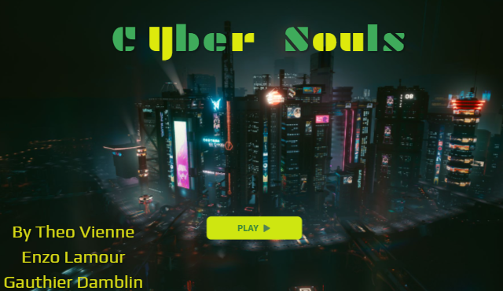
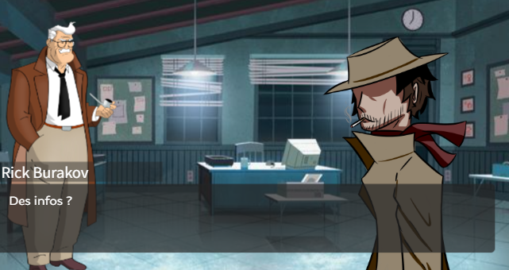
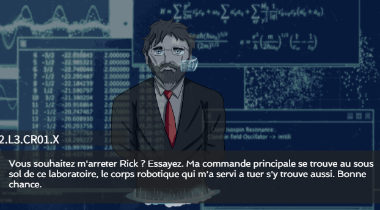
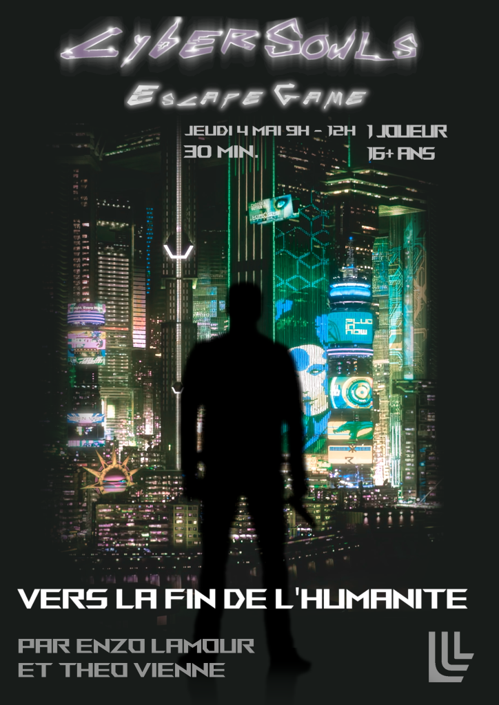

Cybersouls est un Escape Game conçu avec Genially pendant un projet de 1ére année de BUT Informatique.
Vous jouez Rick Burakov, un détective privé chargé d’enquêter sur le meurtre d’un scientifique. Enigmes après énigmes vous allez découvrir les secrets que cache une série de meurtres.
Le jeu à pour objectif de faire découvrir au joueur l’histoire d’Alan Turing ainsi que le concept d’IA.
 J’ai travaillé sur le montage de l’affiche ainsi que le trailer de lancement du jeu. J’ai également fait le visuel du jeu et certains personnages sont dessiné à la main par moi même.
Le jeu est disponible ici.
Le trailer est disponible ici.